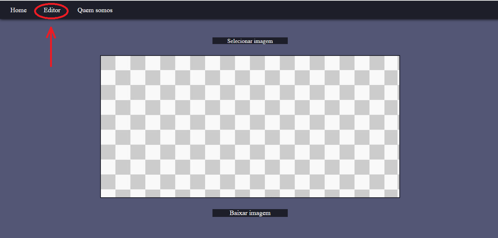
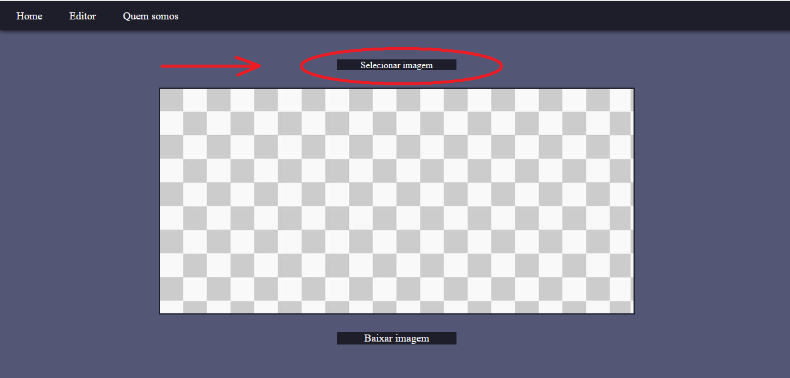
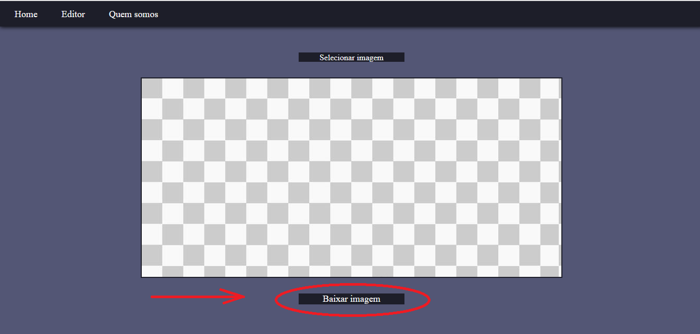

Passo 1/3

Ao se localizar na página Home , no menu superior clique em "Editor"
Passo 2/3

Selecione a imagem que deseja editar
Realize as edições assim que for realizado a importação da imagem escolhida
Passo 3/3

Realize o download da imagem editada
Faça a devida exportação da mesma para onde deseja
❮
❯